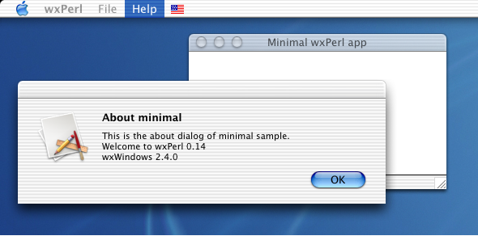
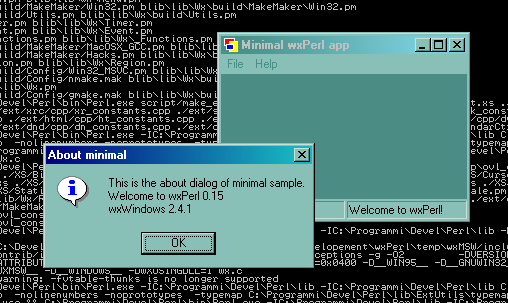
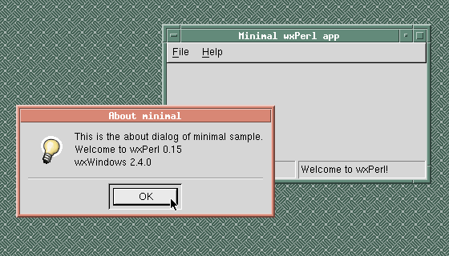
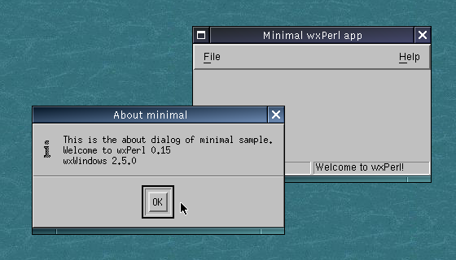

This is the "minimal" sample from the wxPerl distribution (you can
find it in
samples/minimal/minimal.pl). It shows just a window with a
status bar and a menu bar.
Minimal sample (Mac OS X)

Minimal sample (Microsofr Windows 2000)

Minimal sample (Solaris, GTK 1.2); courtesy of Valentin Guignon

Minimal sample (Linux, Motif)
